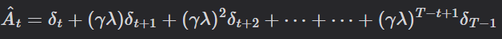

Reinforcement Learning Lab 2
Proximal Policy Optimization (PPO) 實作
作業簡介
實作 PPO 演算法並訓練 Agent 在 BipedalWalker-v3 環境中穩定行走。透過 Actor-Critic 架構，使模型能夠在連續動作空間中學習最佳步態並順利到達終點。
使用技術 / 環境
- Language: Python 3.9
- Framework: PyTorch
- Environment: Gymnasium (BipedalWalker-v3)
- Algorithm: PPO (Proximal Policy Optimization)
方法介紹 (Methodology)
1. 狀態預處理 (State Preprocessing)
環境輸入為 24 維向量（如關節角度、雷達數據）。由於原始數值差異過大，使用 NormalizeObservation 進行標準化，並透過 np.clip 限制範圍，確保訓練穩定性。
env = gym.make('BipedalWalker-v3')
env = NormalizeObservation(env)
env = TransformObservation(env, lambda obs: np.clip(obs, -10, 10))2. 模型架構 (Actor-Critic Architecture)
採用 Actor-Critic 結構，將策略與價值評估解耦：
- PolicyNet (Actor)： 輸出高斯分佈參數（Mean & Std），用於在連續空間採樣動作。
- ValueNet (Critic)： 預測狀態價值（$V$ 值），作為計算 Advantage 的基準。
3. 訓練細節
資料蒐集： PPO 屬 On-policy 演算法，先讓策略與環境互動蒐集資料（Trajectory），再利用 Importance Sampling 技巧進行多次迭代更新。
損失函數與 GAE： 為了穩定更新，計算總損失時包含了 Policy Loss（Clipped）、Value Loss 以及 Entropy Bonus（鼓勵探索）。
使用 GAE (Generalized Advantage Estimation) 平衡偏差與變異，並透過 ratio 計算新舊策略的差異：
ratio = (new_log_probs - old_log_probs).exp()實作成果
Training Statistics

平均 Reward 穩定上升且 Policy Loss 下降，顯示模型正確收斂。由於 Episode 長度變動大，Value 預測難度較高導致 Value Loss 波動，且 Entropy 權重固定使得模型在後期仍保持高探索性。
Evaluation Total Reward: 22.13 (Length: 365)
Final 100-Avg Reward: 271.10
Demo 成果 (Video)
相關資源
完整程式碼與訓練細節請參考 GitHub 儲存庫。
View on GitHub